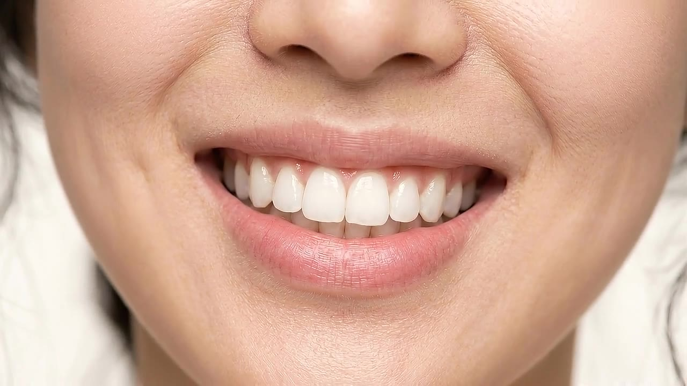

Seu sorriso.
Um cuidado
individual.
Cada história merece ser ouvida. Cada sorriso merece um planejamento próprio.
Converse sobre sua avaliação ↗
O primeiro passo
é conhecer você.
A ortodontia começa com uma conversa e uma avaliação individual.
O atendimento do Dr. Tiago em Gramado reúne escuta, estudo e planejamento. A indicação de qualquer tratamento depende de uma avaliação das necessidades de cada pessoa.
Entre em contato para conhecer as opções disponíveis e conversar sobre o atendimento.
Antes da consulta.
Como agendar uma avaliação?
Acesse a seção de contato e escolha atendimento em ortodontia. Você poderá conversar sobre a disponibilidade de horários.
Qual tratamento é indicado para mim?
A indicação é individual e depende da avaliação do profissional. A escolha deve considerar suas necessidades e o planejamento do caso.
Onde acontece o atendimento?
Em Gramado, em um consultório compartilhado com outros dentistas. Consulte o endereço atualizado ao agendar.